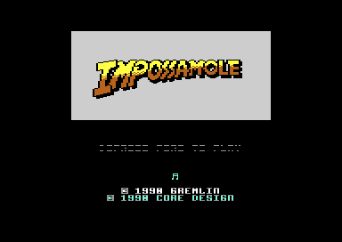

<meta charset="utf-8">
<meta name="viewport" content="width=device-width, initial-scale=1">
<title>Impossamole</title>
<link rel="preconnect" href="https://fonts.googleapis.com">
<link rel="stylesheet" href="https://fonts.googleapis.com/css2?family=Lato:wght@400;700;900&family=IBM+Plex+Mono:wght@400;500&display=swap">
<style>
:root{
  --bg:#23262d; --paper:#e9e7e1; --surface:#ffffff; --surface-2:#f1efea; --line:#d5d3cc; --line-soft:#e0ded8;
  --ink:#2f3136; --ink-soft:#55585f; --ink-mute:#80838a;
  --link:#1f5fa8; --link-hover:#154480; --accent:#1f5fa8;
  --amber:#c25a00; --cyan:#1f5fa8; --coral:#d04a3a; --green:#2a8a4a; --violet:#4a5bd6; --hl:#fff0c2;
  --chip:#2f3136; --chip-ink:#ffffff;
  --c64blue:#40318d; --c64grey:#686868;
  --fd:'Lato',system-ui,sans-serif; --fb:'Lato',system-ui,sans-serif; --fm:'IBM Plex Mono',ui-monospace,Menlo,monospace;
  --col:1080px; --gx:68px; --fs:17px; --lh:1.6; --hw:900; --h1:46px; --h2:26px; --sy:48px; --pp:26px; --r:10px;
  --plate-shadow:0 1px 2px rgba(0,0,0,.05),0 4px 14px rgba(0,0,0,.05);
}
*{box-sizing:border-box}
html{background:var(--bg);min-height:100%}
body{background:var(--paper);color:var(--ink);font-family:var(--fb);font-size:var(--fs);line-height:var(--lh);max-width:var(--col);margin:0 auto;min-height:100vh;padding:0 0 4rem}
h1,h2,h3{font-weight:var(--hw);letter-spacing:-.01em;text-wrap:balance;color:var(--ink);margin:0}
.wrap{padding:0 var(--gx)}
.hero{padding:48px var(--gx) 8px;text-align:left}
.eyebrow{font-family:var(--fm);font-size:12px;letter-spacing:.08em;text-transform:uppercase;color:var(--ink-mute);margin:0 0 10px}
.hero h1{font-size:var(--h1);line-height:1.15;letter-spacing:-.02em;margin:0 0 14px}
.hero .sub{margin:0 0 .6em;color:var(--ink-soft)}
section{padding:var(--sy) 0 24px}
section:last-of-type{border-bottom:none}
.fig{font-family:var(--fm);font-size:12px;letter-spacing:.08em;text-transform:uppercase;color:var(--ink-mute);margin:0 0 10px}
h2.t{font-size:var(--h2);margin-bottom:12px}
.lede{color:var(--ink-soft);margin:0 0 30px}
.plate{background:var(--surface);border:1px solid var(--line);border-radius:var(--r);padding:var(--pp);box-shadow:var(--plate-shadow)}
.cap{font-size:14px;color:var(--ink-mute);margin-top:14px;line-height:1.55}
.cap b{color:var(--ink);font-weight:700}
code{font-family:var(--fm);font-size:.82em;background:var(--chip);color:var(--chip-ink);border-radius:4px;padding:2px 6px;overflow-wrap:break-word;-webkit-box-decoration-break:clone;box-decoration-break:clone}

</style>
<style>.im-row{display:flex;gap:16px;flex-wrap:wrap;align-items:center}.im-pics{display:grid;grid-template-columns:1fr 1fr;gap:18px}.im-pics img{width:100%;image-rendering:pixelated}canvas{image-rendering:pixelated;max-width:100%;height:auto}button,select,input{font:inherit}button,select{padding:8px 12px;margin:4px;border:1px solid #aaa;border-radius:5px;background:#fff;color:#222}button{cursor:pointer}button:focus-visible,select:focus-visible{outline:3px solid #1f5fa8}input[type=range]{width:min(100%,500px)}.im-note{font-size:14px;color:#555}.im-scroll{overflow:auto;background:#111}.im-scroll canvas{max-width:none}table{border-collapse:collapse;width:100%}th,td{text-align:left;padding:9px;border-bottom:1px solid #ddd}output{display:block;margin:10px 0}.im-sprite{background:#292929;padding:16px}.im-error{color:#9e2419}@media(max-width:650px){.wrap{padding:0 20px}.hero{padding:30px 20px}.im-pics{grid-template-columns:1fr}.plate{padding:16px}h1{font-size:36px!important}}</style><!-- tabs -->
<header class="hero"><p class="eyebrow">1990 · Gremlin Graphics · C64</p><h1>Impossamole</h1><p class="sub">Monty’s landscapes share one engine. Blocks build the worlds; small actor records choose how their inhabitants move.</p></header><main class="wrap"><section id="game"><h2 class="t">A mole on five missions</h2><p>Monty explores mines, forests, and icy passages to recover stolen scrolls. He jumps between platforms, fights creatures, and collects food and weapons. Shops let him spend the money he finds.</p><p>The first four levels can be chosen in any order. Completing them opens Bermuda Triangle. Each level has its own guardian.</p><div class="im-pics"><figure><figcaption class="cap">The title screen.</figcaption></figure><figure><figcaption class="cap">Monty in Klondike, the mine level.</figcaption></figure></div></section><section id="sound"><h2 class="t">One tune and sixteen effects</h2><p>Barry Leitch’s music has three voices. Each voice follows a list of musical patterns. The sound effects use separate records that control pitch, waveform, and volume over time.</p><div id="im-music" class="plate"></div><div id="im-effects" class="plate"></div><p class="cap">These players run the game’s own audio routines on the shared 6502 processor model and send their writes to the SID sound-chip model. The tune starts at <code>$6CC5</code> and advances at <code>$6701</code>. Effects start through <code>$6117</code> and advance at <code>$6281</code>. A test compares every register write for the tune and all 16 effects. The 6581 filter model represents one chip’s cutoff curve; physical chips vary.</p></section><section id="frame"><h2 class="t">The screen changes during each frame</h2><div class="plate"><canvas id="im-frame"></canvas><div><button id="im-sprites">Hide sprites</button><button id="im-split">Freeze video registers</button></div><p class="cap">A frame drawn from the recorded video writes and the memory they read. All 104,448 pixels match the emulator image; zero differ. Freeze the registers to see why one snapshot of them is insufficient.</p></div><p>The video chip draws the playfield with the level’s character set. A later interrupt, a scheduled call during drawing, selects the character set for the status display. The handlers at <code>$0973</code>, <code>$0A5C</code>, and <code>$0ACA</code> schedule the next calls at lines 176, 255, and 57. The screen also uses hardware sprites for Monty and the other moving objects.</p></section><section id="map"><h2 class="t">Small blocks build the landscape</h2><div class="plate"><canvas id="im-map" width="320" height="192"></canvas><label>Map column <input id="im-pan" type="range" min="0" max="1656" value="0"></label><label><input type="checkbox" id="im-terrain"> Show terrain classes</label><output id="im-map-info"></output></div><p>Each map byte chooses a block of sixteen characters. Six blocks make one vertical strip. The same character can therefore appear in many places while keeping its colour and collision rule. The block definitions begin at <code data-part="klondike">$B000</code>; colours and terrain rules begin at <code data-part="klondike">$AE00</code> and <code data-part="klondike">$AF00</code>.</p><p>The overlay highlights the collision classes: blue for class 1, green for class 2, yellow for class 3, and red for class 4 and above. Individual movement tests use different thresholds. The <a href="levels.html">Maps tab</a> draws the full stored stream for every level and lists its exit destinations.</p></section><section id="resources"><h2 class="t">Strength stops at three</h2><div class="plate"><label>Strength <select id="im-strength"><option>0</option><option>1</option><option>2</option><option>3</option></select></label><button id="im-upgrade">Take a strength pickup</button><output id="im-resource"></output></div><p>Strength is a weapon index with four values, from 0 to 3. A pickup increments that value. If the result equals 4, the game replaces it with 3. The instruction trace through <code>$1B11</code> confirms that another pickup at maximum strength leaves the value at 3.</p><p>Temporary weapons have a separate lifetime. The divider at <code>$7F7B</code> counts 50 calls to <code>$4FE4</code> before reducing the lifetime at <code>$7F7A</code>. The game’s high-score names can change these defaults and rules. They are listed on <a href="discoveries.html">Discoveries</a>.</p></section><section id="controls"><h2 class="t">The keyboard supplements joystick 2</h2><details><summary>Show controls and code evidence</summary><table><tr><th>Control</th><th>Action</th></tr><tr><td>Joystick port 2</td><td>Move, jump, climb, and attack.</td></tr><tr><td>SPACE</td><td>Use an available super weapon outside the shop.</td></tr><tr><td>P</td><td>Toggle pause when the death state permits.</td></tr><tr><td>RUN/STOP while paused</td><td>Quit to the title.</td></tr><tr><td>Title-screen joystick</td><td>Select music or sound effects.</td></tr></table><p>The keyboard scanner is <code>$0E9A</code>. The command handler at <code>$0FA4</code> applies the pause, super-weapon, and quit conditions. The joystick’s fire button starts the normal attack; strength and weapon type choose its template.</p></details></section></main><footer style="margin:16px 0 0;padding:22px var(--gx) 0;border-top:1px solid #e0ded8;font-family:'IBM Plex Mono',ui-monospace,Menlo,monospace;font-size:12px;color:#80838a"><a href="https://github.com/gamesexplained/gamesexplained" style="color:#1f5fa8;text-decoration:none">GitHub</a> · <a href="https://discord.gg/3V9GWyRDWV" style="color:#1f5fa8;text-decoration:none">Discord</a><br>© Games Explained contributors. Write-ups, facts and symbol maps are available under <a href="https://creativecommons.org/licenses/by-sa/4.0/" style="color:#1f5fa8;text-decoration:none">CC BY-SA 4.0</a>; code under <a href="https://opensource.org/licenses/MIT" style="color:#1f5fa8;text-decoration:none">MIT</a></footer>
<script src="../../lib/c64.js"></script><script src="../../lib/sid.js"></script><script src="../../lib/cpu6502.js"></script><script>

const IM_IDS=['klondike','orient','amazon','iceland','bermuda'];
const IM_NAMES=['Klondike','Orient','Amazonian Forest','Iceland','Bermuda Triangle'];
const $=id=>document.getElementById(id);
function imHex(a){return '$'+a.toString(16).toUpperCase().padStart(4,'0');}
async function imMemory(i){const [r,l]=await Promise.all([C64.load('parts/resident/listing.json'),C64.load('parts/'+IM_IDS[i]+'/listing.json')]);const m=r.ram.slice();for(let a=0;a<65536;a++)if(l.has[a])m[a]=l.ram[a];return m;}
function imOptions(el){IM_NAMES.forEach((s,i)=>el.add(new Option(s,i)));}
function imFail(e){console.error(e);const x=document.createElement('p');x.className='im-error';x.textContent='Viewer stopped: '+e.message;document.querySelector('main').append(x);}
// im-map-port
function imBlock(m,id){return Array.from(m.slice(0xb000+16*id,0xb010+16*id));}
function imDrawMap(canvas,m,start=0,columns=40,overlay=false){canvas.width=columns*8;canvas.height=192;const c=canvas.getContext('2d'),cs=m.subarray(0xf000,0xf800),level=m[0x83e6],pal=C64.PAL;
for(let x=0;x<columns;x++)for(let y=0;y<24;y++){const col=start+x,block=m[0xa410+Math.floor(col/4)*6+Math.floor(y/4)],ch=imBlock(m,block)[(y%4)*4+col%4],co=m[0xae00+ch];
 if(co&8)C64.drawGlyphMC(c,cs,ch,x*8,y*8,1,[pal[0],pal[m[0x7ec1+level]&15],pal[m[0x7ec6+level]&15],pal[co&7]]);else C64.drawGlyph(c,cs,ch,x*8,y*8,1,pal[co&15],pal[0]);
 if(overlay){const t=m[0xaf00+ch];c.fillStyle=['#ffffff00','#4af8','#4f48','#ff48','#f448'][Math.min(t,4)];c.fillRect(x*8,y*8,8,8);}}
}
// end im-map-port
// im-animation-port
function imActor(m,p){return {shape:m[p],colour:m[p+1],expandX:0,expandY:m[p+7],multi:m[p+8],index:m[p+11],delay:m[p+12],reload:m[p+12],active:1};}
function imTick(m,a){if(!a.active||a.delay===255)return;if(a.delay){a.delay--;return;}if(!a.index)return;a.delay=a.reload;
for(let guard=0;guard<256;guard++){const v=m[0x8ec0+a.index];if(v!==255){a.shape=v;a.index=(a.index+1)&255;return;}const n=m[0x8ec0+((a.index+1)&255)];if(n===255){a.active=0;a.index=0;a.shape=0;return;}a.index=n;if(!n)return;}throw Error('Animation loop without a shape');}
function imSprite(canvas,m,a){canvas.width=144;canvas.height=126;const c=canvas.getContext('2d');c.fillStyle='#292929';c.fillRect(0,0,144,126);if(!a.active)return;const b=m.slice(0xc000+64*a.shape,0xc03f+64*a.shape),pal=C64.PAL,ex=a.expandX?2:1,ey=a.expandY?2:1;
if(a.multi)C64.drawSpriteMC(c,b,0,0,3,pal[a.colour&15],pal[11],pal[15],ex,ey);else C64.drawSprite(c,b,0,0,3,pal[a.colour&15],ex,ey);}
function imTemplates(m){const out=[];for(let i=0;i<256;i++){const p=m[0x817c+2*i]|m[0x817d+2*i]<<8;if(p>=0x9142&&p+25<=0x9aff)out.push({id:i,p});}return out;}
// end im-animation-port


// im-audio-driver
function createDriver(D,C64Cpu){
 const base=new Uint8Array(65536);for(const [a,b] of D.mem)base.set(b,a);
 const sid=new Uint8Array(25);let m,cpu,writes=[],over=false,tune=0,frames=0;
 const io={read(a){throw Error('Audio read '+a.toString(16));},write(a,v){if(a>=0xd400&&a<=0xd418){sid[a-0xd400]=v;writes.push(a-0xd400,v);}else throw Error('Audio write '+a.toString(16));}};
 const run=a=>cpu.call(a,{}, {maxSteps:100000});
 return {sid,get writes(){return writes;},init(t){tune=t;m=base.slice();cpu=new C64Cpu.CPU(m,{port:0x35,io});sid.fill(0);writes=[];frames=0;over=false;
 if(t===0){m[0x66ff]=0;cpu.call(0x6cc5,{a:0});}else{m.fill(0,0x6583,0x65f1);m[0x6102]=0;run(0x6107);m[0x6105]=1;m[0x6106]=t-1;}},
 play(){writes=[];if(over)return;frames++;if(tune===0)run(0x6701);else{run(0x6117);run(0x6281);if(frames>2&&!m[0x6583]&&!m[0x65f0])over=true;}},stop(){over=true;writes=[];},playing(){return !over;}};
}
// end im-audio-driver

const IM_FRAME={"schema":1,"standard":"PAL","lines":312,"cycles":63,"about":"","vic":[60,197,78,203,115,201,200,197,205,194,32,165,0,0,0,0,32,27,0,209,0,255,208,0,191,118,241,0,61,0,61,61,240,240,251,240,243,251,255,242,253,254,252,253,252,255,255],"cia2":[196,63],"cpu":[47,53],"writes":[[58,39,53270,211,211],[58,57,53272,189,188],[59,6,53282,248,8],[59,57,53283,252,12],[60,2,60408,3,3],[60,6,61432,3,3],[60,26,60410,86,86],[60,30,61434,86,86],[60,38,60411,112,112],[60,42,61435,112,112],[60,50,60412,127,127],[60,54,61436,127,127],[60,62,60413,112,112],[61,3,61437,112,112],[255,63,53270,208,208],[256,12,53272,191,190],[260,42,53264,0,0],[260,46,53276,0,0],[261,19,60408,0,0],[261,24,61432,0,0],[262,23,53276,1,1],[264,46,60410,0,0],[264,51,61434,0,0],[265,49,53276,5,5],[266,20,53254,199,199],[266,36,60411,0,0],[266,41,61435,0,0],[267,40,53276,13,13],[268,4,53256,203,203],[268,19,53257,196,196],[268,26,60412,0,0],[268,31,61436,0,0],[269,30,53276,29,29],[270,17,60413,0,0],[270,22,61437,0,0],[270,60,53264,32,32],[271,39,53276,61,61],[275,35,53283,240,0],[275,41,53282,251,11]],"colour":"Dw8PDw8PDw8PDw0NDQ0NDw8PDw8PCgoKDQ0NDQsLCwsLCwsLCwsLCwsLCwsLCwsLCwsLCwsLCwsLCwsLCwsLCwsLCwsLCwsLCwsLCwsLCwsLCwsLCwsLCwsLCwsLCwsLCwsLCwsLCwsLCwsLCwsLCwsLCwsLCwsLCwsLCwsLCwsLCwsLCwsLCwsLCwsLCwsLCwsLCwsLCwsLCwsLCwsLCwsLCwsLCwsLCwsLCwsLCwsLCwsLCwsLCwsLCwsLCwsLCwsLCwsLCwsLCwsLCwsLCwsLCwsLCwsLCwsLCwsLCwsLCwsLCwsLCwsLCwsLCwsLCwsLCwsLCwsLCwsLCwsLCwsLCwsLCwsLCwsLCwsLCwsLCwsLCwsLCwsLCwsLCwsLCwsLCwsLCwsLCwsLCwsLCwsLCwsLCwsLCwsLCwsLCwALCwsLCwsLCwsLCwsLCwsLCwsLCwsLCwsLCwsLCwsLCwsLCwsLCwACCwsLCwsLCwsLCwsLCwsLCwsLCwsLCwsLCwsLCw8PDw8PDw8PAAACAgsLCwsLCwsLCwsLCwsLCwsLCwsLCwsLCwsLCwsADw8PDw8PAAICAgILCwsLCwsLCwsLCwsLCwsLCwsLCwsLCwsLCwsAAgIPDw8PAAICAgICCwsLCwsLCwsLCwsLCwsLCwsLCwsLCwsLCwsAAgICAg8PAAICAgICAgsLCwsLCwsLDw8PDw8PDw8LCwsLCwsLCwAAAgICAgIPDwACAg8PDw8LCwsLCwsLCwAPDw8PDw8AAAADAAAAAAACAgICAgICDw8AAgICAgICAgsLCwsLCwACAg8PDw8AAgICDwICAgICAgICAgICAg8PAAICAgICAgICCwsLCwACAgICDw8AAgICAg8CAgICAgICAgICAgIPDwACAgICAgICAgIAAAACAgICAg8PAAICAgICAgICAgICAgICCwsLCwsLCwsLCwsLAgICAgICAgICAgIPDwACAgICAgICAgICAgICAgsLCwsLCwsLCwsLCwICAgICAgICAgICDw8AAgICAgICAgICAgICAgILCwsLCwsLCwsLCwsCAgICAgICAgICAg8PAAICAgICAgICAgICAgICCwsLCwsLCwsLCwsLCwsLCwsLCwsLCwsLCwsLCwsLCwsLCwsLCwsLCwsLCwsLCwsLCwsLCwsLCwsLCwsLCwsLCwsLCwsLCwsLCwsLCwsLCwsLCwsLCwsLCwsLCwsLCwsLCwsLCwsLCwsLCwsLCwsLCwsLCwsLCwsLCwsLCwsLCwsLCwsLCwsLCwsLCwsLCwsLCwsLCwsLCwsLCwsLCwsLCwsLCwsLCwsLCwsLCwAAAAAAAAAAAAAAAAAAAAAAAAAAAAAAAA==","ram":[{"a":49152,"b":"AAAAAAAAAAAAAAAAAAAAAAAAAAAAAAAAAAAAAAAAAAAAAAAAAAAAAAAAAAAAAAAAAAAAAAAAAAAAAAAAAAAA"},{"a":49344,"b":"AH9AAf3QA/30A//9Af/9Cn/0CZVQK3QAJ/0AL30ALX0Ar90Ap90Apd0Aq30AqfQAKvAAAPAAAPAAANQAAPwA"},{"a":54656,"b":"AAAAAwAADQAAA8AAAUAABVAAGlQALpQAf5UAf5UAbpUAapkAWlkAVWkAFWgAFaQABVAAAAAAAAAAAAAAAAAA"},{"a":56320,"b":"AAAAB6QAD+kAAykAB3UAD9UAD/QAC4wAACLQAAc0PLxMN0MMHCzPAALFAAxAADDAAKDAAMCwAMAMAMAsO0O4"},{"a":57280,"b":"AAAAAAAAEAAAIAAAIAAAdAAAmQAAekAAGZAABlAACZAAGWAAJVgAGQQABgAAAQAAAAAAAAAAAAAAAAAAAAAA"},{"a":60416,"b":"BwcHBwcHBzAHBykoKAcHBwcHBwcHBAQEBAQEBAQEBwcHBwcHBwcHB15fYGFOT1BRXl9gYU5PUFFeX2BhTk9QUV5fYGFOT1BRXl9gYU5PUFFiY2RlUlNUVWJjZGVSU1RVYmNkZVJTVFViY2RlUlNUVWJjZGVSU1RVZmdoaVZXWFlmZ2hpVldYWWZnaGlWV1hZZmdoaVZXWFlmZ2hpVldYWWprbG1aW1xdamtsbVpbXF1qa2xtWltcXWprbG1aW1xdamtsbVpbXF1eX2BhXl9gYU5PUFFeX2BhTk9QUV5fYGFOT1BRXl9gYU5PUFFOT1A5YmNkZWJjZGVSU1RVYmNkZVJTVFViY2RlUlNUVWJjZGVSU1RVUlNUOGZnaGlmZ2hpVldYWWZnaGlWV1hZZmdoaVZXWFlmZ2hpVldYWVY2N7hqa2xtamtsbVpbXF1qa2xtWltcXWprbG1aW1xdamtsbVpbXF00Nbi3Xl9gYU5PUFFeX2BhTk9QUV5fYGFOT1BRTk9QOR0eHxMUHR4fuLi3tWJjZGVSU1RVYmNkZVJTVFViY2RlUlNUVVJTVDi4GRoVFhscuLa3trNmZ2hpVldYWWZnaGlWV1hZZmdoaVZXWFlWNje4t7YZFxgcuLays7S1amtsbVpbXF1qa2xtWltcXWprbG1aW1xdNDW4t7O0thMUuLa1tLWysy5PUFFOT1A5HR4fExQdHh9ub3Bxbm9wcbi4t7Wys7QVFri3td3d3N0vU1RVUlNUOLgZGhUWGxy4uLjluLi4uLi2t7aztLWyFxi4trO2t7a3tzAxWVY2N7i3thkXGBy4tre25ra2t7a3srO0tbKztBMUuLe1srO0tbS3MjM0Nbi3s7S2ExS4trW0tee3tLW0tbS1srO0tbIXGLi2s7S1srOys7e4uLi3tbKztBUWuLe1srO0tbKztLWys7S1nJmam5iZmpuYmZqbtLW2t7a3trO0tbIXGLi2s7S1srO0tbKztLWys55TVFViY2RlUlNUVbKztLWys7S1srO0ExS4t7Wys7S1srO0tbKztLWfV1hZZmdoaVZXWFm0tbKztLWys7S1shcYuLaztLWys7S1srO0tbKzoFtcXWprbG1aW1xdnJmam5iZmpuYmZqbmJmam5iZmpuYmZqbmJmam15fYGFOT1BRXl9gYZ5TVFViY2RlUlNUVWJjZGVSU1RVYmNkZVJTVFViY2RlUlNUVWJjZGWfV1hZZmdoaVZXWFlmZ2hpVldYWWZnaGlWV1hZZmdoaVZXWFlmZ2hpoFtcXWprbG1aW1xdamtsbVpbXF1qa2xtWltcXWprbG1aW1xdamtsbQ=="},{"a":61432,"b":"AAAAAAAAAAA="},{"a":61592,"b":"dVNFDUQRcFFUMTARDAXRcMHAxNBw0ETNERAFDQQNFDBEQRNzEURMzXTFBAVURRQUFBEEBwEBAABAAFBAFNTcdQEFBB0ddXVUEMBQAEAAAAAAEUTUUdVUIQAQAEQBVVVAABEARBVQFVg="},{"a":61808,"b":"Pz7vzs7Orig4MDA0ICAgAOSkMSAgABAAxNCQksKCAgoMDAwIAAAAACMDAgIAAAAAo4KCAAAAAACAwICAAAAAAKCg8aGhwJCQxJCQgICAAAAQEBAggAAAADIzIysujogo"},{"a":62064,"b":"Ojoujs6Lqi4oOKiCIYkMLiIqOjo+Oi4uIjIzKquOiy44ODgkuKajIjq6rs6LwpPiiIiAoqGgoKQbEhIihISEgCMLjo8ODisypKShoaGAkJKkwJCSg4ILDgAAgoOCiw4v4+KiICi46uqCgIiIKCw4uApMTCg4OiqiLgqC4qAwICg6Pi6OjoqOSTg4eGAIICQ4MjKy6u0+Lw4iMjI6Kg5Oi4gIIiMysOjousrqqCo6OnoLLjouue65qpNTEhIQRAREiMiIiiIjMituTg4LG5KaijkqOSiJSoJCBEQQUhJSQoKLrm44OLjq6ggMLHp6OjioSGx4aHgqMiKCwoLioCAgKO66vDg4MDAguOi4MCAgAAAz4+KsODAwILg8KAgAMCAA"},{"a":62656,"b":"vv//r4sCgKC/ruqogAAgqOKvvj4uCCAI6quqqOCAAiK+/++riwIgKA=="},{"a":62704,"b":"uPD4+Ojm46Pj6srOjgoLAyMiMrCo+Oy6"},{"a":62864,"b":"NnJh0eHCZiRix8WIis5GohUcGLAwIkTEx8aOjAREIiIEEBEhQkYkEAgQEEBIiIwEAAAAAAAAAAA="},{"a":63200,"b":"Rdfd191MVURV7ffdVUQQAA=="},{"a":63272,"b":"EBAQEBAQEBAANEF1BCS4uLi4JAR1AAAA"},{"a":63520,"b":"7u7u7u7u7qo="},{"a":63544,"b":"qqqqqqqqqqo="},{"a":63808,"b":"VWlpaWlpVapVfX19fX1Vqg=="},{"a":63872,"b":"Vu7e/t7uVqo="},{"a":65535,"b":"Dg=="}],"capture":{"phase_cycles_uncertain":0,"frame_cycles":19655,"frame_ended_on_line":0,"picture_lines_low":0,"writes_account_for_end_state":true,"ram_bytes_changed_during_frame":37,"colour_cells_changed_during_frame":0}};
(async()=>{
if(typeof C64==='undefined')throw Error('Build the site to load the shared drawing library.');
let sprites=true,split=true;function drawFrame(){const f=JSON.parse(JSON.stringify(IM_FRAME));if(!split)f.writes=[];if(!sprites){f.vic[0x15]=0;f.writes=f.writes.filter(w=>w[2]!==0xd015);}C64.drawFrame($('im-frame'),f);}
$('im-sprites').onclick=()=>{sprites=!sprites;$('im-sprites').textContent=sprites?'Hide sprites':'Show sprites';drawFrame();};$('im-split').onclick=()=>{split=!split;$('im-split').textContent=split?'Freeze video registers':'Follow video writes';drawFrame();};drawFrame();
const m=await imMemory(0);function map(){imDrawMap($('im-map'),m,+$('im-pan').value,40,$('im-terrain').checked);$('im-map-info').textContent='Klondike · character columns '+$('im-pan').value+'–'+(+$('im-pan').value+39)+' of 1696 stored';}map();$('im-pan').oninput=map;$('im-terrain').onchange=map;
$('im-upgrade').onclick=()=>{let n=+$('im-strength').value+1;if(n===4)n=3;$('im-strength').value=n;$('im-resource').textContent='Strength after pickup: '+n+' (maximum 3)';};
if(typeof C64Sid==='undefined'||typeof C64Cpu==='undefined')throw Error('Build the site to load the shared sound and CPU libraries.');
const mem=[[0x60da,Array.from(m.slice(0x60da,0x7ec0))],[0x9c00,Array.from(m.slice(0x9c00,0xa000))]];
C64Sid.mount($('im-music'),{driver:createDriver,data:{mem},tunes:['Title and gameplay tune'],filter:'6581'});
function effectDriver(D,CPU){const d=createDriver(D,CPU);const init=d.init;d.init=t=>init(t+1);return d;}
// The worklet needs a driver with no references outside its own source.
const effectSource=createDriver.toString().replace('tune=t;m=','t=t+1;tune=t;m=');const effects=Function('return ('+effectSource+')')();
C64Sid.mount($('im-effects'),{driver:effects,data:{mem},tunes:Array.from({length:16},(_,i)=>'Effect '+i),filter:'6581',rows:[]});
})().catch(imFail);

</script>
